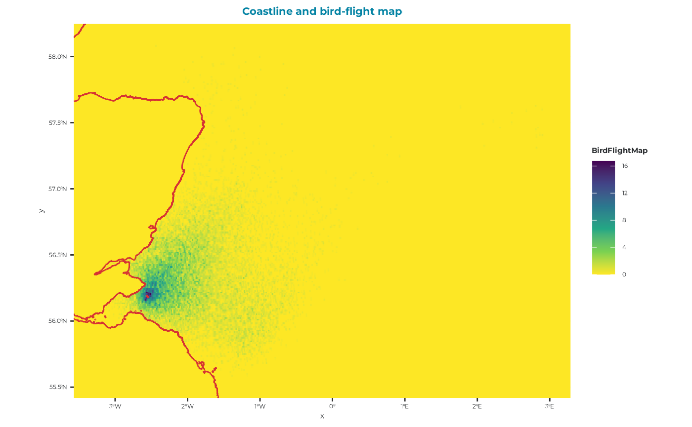
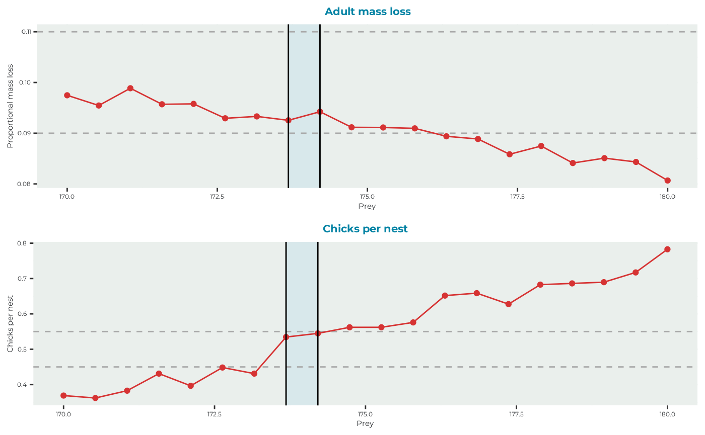

Example kittiwake: step 2.2 - seabORD calibration - GPS maps
F_exampleKI_calib.RmdIntroduction & background
A key component of the seabORD model is the need to calibrate the prey level inputs used for each new species and colony combination. This currently involves re-running the model without ORDs (baseline simulations) with a range of prey levels to ascertain the range of values within which the model returns adult mass and chick mortality rates consistent with pre-defined values representing “moderate” conditions (Figure 1). This is to allow simulation of the range of outcomes expected under these conditions, as the model is highly sensitive to the prey density parameter.
![Figure 1: Schematic plot of kittiwake adult mass loss (A) and chicks per nest (B) withdrawn from 300 baseline simulations (no ORD footprints) ranging from a prey value of 50 up to 250. The red lines are for smoothed model outputs, which are overlaid on grey points indicating the individual estimates. For calibration we have upper and lower bound for each output (A & B) which are picked to reflect “moderate” conditions, i.e., what is observed in a typical year for kittiwakes at the Isle of May, and these are indicates by the dashed grey horizontal lines. The grey shaded blocks indicate where the respective outputs fall within these bound, and the light blue shaded block indicates the prey values where there is overlap between the estimates, which is the prey range used in subsequent simulations with ORDs included.](images/Calibration_plot_schematic_extended_seabordpkg.png)
This example
In this example we will run 20 baseline runs (no wind farm footprints included) with a range of prey values and plot the outputs in attempt to capture “moderate” conditions for kittiwakes at the Isle of May.
Prepare inputs
The inputs for a calibration are largely the same as when running a full run except there are no ORDs included. We will first load in our parameter sets (Par, modPar, ordPar, switches), followed by the various spatial inputs used to set up the landscape and environment attributes.
Get the input parameters set-up example for the calibration exercise. For more information please see the “Example kittiwake: step 1 - seabORD inputs” article.
Parameters sets
Par
NOTE: “NScalefactor” is set to 0.1 meaning we are running with 10% of the population, which may be sufficient for calibration runs.
Par_example <- seabORD::get_example_par(type = "cal")modPar
modPar_example <- seabORD::get_example_modpar(type = "cal")
str(modPar_example)
#> List of 5
#> $ Nparallel : logi NA
#> $ initialseed: num 6598
#> $ reference : chr "serial_calibration_KI_UK9004171"
#> $ outputdir : chr "output_seabORD"
#> $ Nreplicates: num 20Create the output folder , for example “output_seabORD_calibration” and assign it in the modPar list.
#set the output of ModPar
#specifically for calibration outputs if it doesn't alreay exist
if (!dir.exists("output_seabORD_calibration")) {
dir.create("output_seabORD_calibration")
}
modPar_example$outputdir <- "output_seabORD_calibration"NOTE: Run this test! here is where our 20 replicates are specified - this must align with the number of prey values listed in “Par_example$Pmedian”.
seabORD::check_calibration_inputs(
Par = Par_example,
modPar = modPar_example
)
#> Calibration inputs valid: 20 replicate(s) and 20 prey value(s).ordPar
ordPar should be empty, as there doesn’t need to be as we are only running baseline runs with no ORDs included.
ordPar_example <- seabORD::get_example_ordPar(type = "cal")
str(ordPar_example)
#> list()Switches
Turn on the switch “savebirdflightmap”, to see an example of the birdflightmap output
switches_example <- seabORD::get_example_switches(type = "cal")
switches_example$savebirdflightmap <- TRUE
str(switches_example)
#> List of 14
#> $ environment : chr "serial"
#> $ modelmode : chr "calibration"
#> $ debugmode : num 0
#> $ bycol : logi FALSE
#> $ bysus : logi FALSE
#> $ bych : logi FALSE
#> $ printdaily : logi FALSE
#> $ printseason : logi FALSE
#> $ printpair : logi FALSE
#> $ printfinal : logi FALSE
#> $ minout : logi FALSE
#> $ silent : logi FALSE
#> $ saverds : logi TRUE
#> $ savebirdflightmap: logi TRUEAssorted spatial inputs
Get the spatial input examples for the calibration exercise. For more information please see the “Example kittiwake: step 1 - seabORD inputs” article.
seamask
seamask_example <- seabORD::get_example_seamask()spadat1
spadat1_example <- seabORD::get_example_spadat1()spadat2
spadat2_example <- seabORD::get_example_spadat2()spdat
spdat_example <- seabORD::get_example_spdat()BrdData
BrdData_example <- seabORD::get_example_brddata()FrgCompData
FrgCompData_example <- seabORD::get_example_frgcompdata()fltdist_base
fltdist_base_example <- seabORD::get_example_fltdist_base()FlightGridcorrection
FlightGridcorrection_example <- seabORD::get_example_fgc_3035()Set off calibration runs
Now that the inputs have been prepared by loading them into our environment we can set off the run using the following code. You can also use the example output.
Calculates (Slow):
SeabORDoutput <- seabord(Par = Par_example,
ordPar = ordPar_example,
modPar = modPar_example,
switches = switches_example,
seamask = seamask_example,
spadat1 = spadat1_example,
spadat2 = spadat2_example,
spdat = spdat_example,
BrdData = BrdData_example,
FrgCompData = FrgCompData_example,
fltdist_base = fltdist_base_example,
FlightGridcorrection = FlightGridcorrection,
ORDpoly = ORDpoly_example)Load example calibration output (used throughout this vignette)
sbordout <- seabORD::get_example_output(type = "cal")Plot the outputs and determine prey values
For this particular example we define moderate conditions for kittiwakes on the Isle of May against the two following outputs:
| Output | Moderate value | Upper bound (+10%) | Lower bound (-10%) |
|---|---|---|---|
| Adult mass loss | 10% | 11% | 9% |
| Chicks per nest | 50% | 55% | 45% |
Where adult mass loss is the average percentage mass loss of adults over the duration of the chick-rearing season being simulated, and chicks per nest is the average number of chicks surviving per nest. The aim of calibration is to find the shared prey values contained within the upper and lower bounds between each output.
seabORD::plot_BirdFlightMap(
sbordout$BirdFlightMap
)
You can see from this map that there is no evidence of and ORD interactions, which is reassuring!
Now we will plot the adult outputs (sbordout$output_a0) and the chick outputs (sbordout$output_c0) against the range of prey values across replicates to obtain our calibrated estimates to be used in the scenario runs going forward.
Use the bounds for moderate conditions to be plotted.
# Identify prey values that simultaneously satisfy
# the adult mass loss and productivity constraints
calibration <- seabORD::calc_calibration_range(
sbordout,
masslower = 0.09,
massupper = 0.11,
prodlower = 0.45,
produpper = 0.55
)
#plot it
seabORD::plot_calibration_outputs(
sbordout,
calibration = calibration,
masslower = 0.09,
massupper = 0.11,
prodlower = 0.45,
produpper = 0.55
)